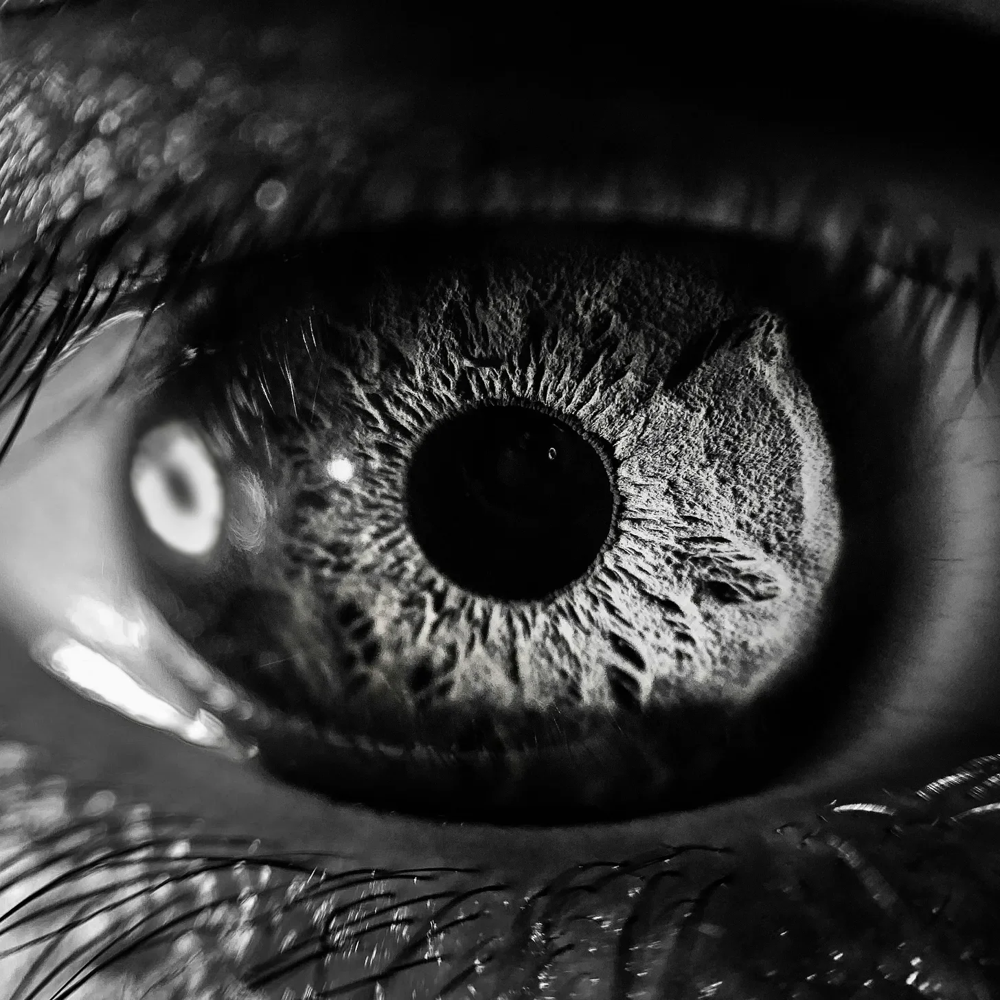

깜빡.
수잔은 북적거리는 농산물 시장 한가운데 서 있는 자신을 발견했다. 익은 복숭아와 갓 구운 빵 냄새가 코를 자극했다. 구겨진 종이 같은 피부를 가진 이 빠진 노파가 꿈틀거리는 보라색 장어로 보이는 것들이 담긴 바구니를 그녀의 얼굴 앞에 들이밀었다.
“공허에서 갓 잡아온 거야, 아가! 눈알 하나면 돼!”
수잔의 속이 뒤틀렸다. 거절하려고 입을 열었지만, 눈꺼풀이 그녀를 배신했다.
깜빡.
숨 막히는 열기가 벽처럼 그녀를 덮쳤다. 모래가 사방으로 펼쳐져 있었고, 물결치는 모래 언덕이 지평선까지 이어졌다. 천으로 온몸을 감싼 외로운 인영이 그녀를 향해 터벅터벅 걸어왔다. 오직 눈만 보였다. 가까이 다가오자 수잔은 그 눈이 부자연스러운 초록색으로 빛나고 있다는 것을 깨닫고 공포에 휩싸였다.
깜빡이지 마, 깜빡이지 마, 깜빡—
깜빡.
역겨운 부패 냄새가 그녀의 폐를 가득 채웠다. 수잔은 자신이 무릎까지 늪에 빠져 있는 것을 발견했다. 탁한 물이 청바지를 적셨다. 무언가가 그녀의 다리를 스쳤다. 아래를 내려다보니 물고기들이 뜯어먹은 부풀어 오른 손이 깊은 물속에서 올라오고 있었다.
비명이 목구멍에서 터져 나오려 했지만, 그 전에—
깜빡.
멸균된 하얀 벽. 기계의 규칙적인 삐 소리. 병원인가? 수잔의 안도감은 잠시뿐이었다. 손목과 발목의 구속구를 발견했기 때문이다. 방호복을 입은 의사가 주사기를 들고 그녀 위에 서 있었다.
“피험자 247,” 웅웅거리는 목소리가 울렸다. “기억 삭제 시작합니다. 3… 2…”
아니야, 아니야, 아니야—
깜빡.
발 밑의 바닥이 흔들렸다. 수잔은 비틀거리며 난간을 붙잡았다. 그녀는 배 갑판 위에 있었고, 짠 바다의 물보라가 눈을 따갑게 했다. 망루에서 외침이 들려왔다:
“좌현에 리바이어던 출현!”
바다가 폭발했다. 참나무만큼 굵은 촉수가 갑판을 내리쳤고, 나무를 부수고 사람들을 짓눌렀다. 피와 바닷물이 섞여—
깜빡.
고요함. 축복 같은 고요함. 수잔의 눈이 어둠에 적응했다. 그녀는 도서관에 있었고, 먼지 쌓인 책들이 그림자 속으로 줄지어 있었다. 꼬부라진 사서가 반달 안경 너머로 그녀를 응시했다.
“늦었군요,” 그가 속삭였다. “책이 기다리고 있었어요.”
그녀 앞 탁자에는 고대의 책이 놓여 있었고, 표지가 마치 그 안에 무언가 살아있는 것처럼 움직였다.
수잔은 손을 뻗어 가죽 표지를 살짝 만졌다. 그녀는 망설이다가—
깜빡.
타는 고무의 역한 냄새가 수잔의 감각을 공격했다. 그녀는 고속도로 한가운데 있었고, 차들이 경적을 울리며 그녀 주위로 핑핑 돌았다. 대형 트럭이 그녀를 향해 돌진해 왔고, 운전사의 눈은 공포로 커져 있었다.
그녀는 몸을 던졌고, 콘크리트가 그녀의 손바닥을 긁으며 구르는데—
깜빡.
무중력. 수잔은 별빛 점들에 둘러싸인 채 허공에 떠 있었다. 부드러운 윙윙거리는 소리가 그녀의 귀를 채웠고, 거대하고 반투명한 해파리 같은 생물이 지나갔다. 그 촉수는 수 마일에 걸쳐 있었다.
“환영합니다, 여행자님,” 목소리가 그녀의 마음속에 울렸다. “우리는 기다려 왔—”
깜빡.
총성이 울렸다. 수잔은 뒤집힌 차 뒤에 웅크리고 앉아 있었고, 심장이 쿵쾅거렸다. 연기가 공기를 가득 채웠다. 혁명? 전쟁? 누더기 군복을 입은 여자가 그녀의 팔을 잡았다.
“저들이 오고 있어! 지금 당장 움직이지 않으면—”
깜빡.
웃음소리. 아이들의 웃음소리. 수잔은 그네와 미끄럼틀로 둘러싸인 놀이터에 서 있었다. 하지만 뭔가 이상했다. 아이들의 눈은 너무 어두웠고, 미소는 너무 컸다. 한 아이가 그녀에게 다가왔고, X자 모양의 눈을 가진 인형을 내밀었다.
“같이 놀래?” 아이가 왜곡된 목소리로 물었다. “조금밖에 안 아파.”
수잔은 뒷걸음질 치며 참으려 애썼다—
깜빡.
호화로움. 크리스탈이 주렁주렁 매달린 샹들리에가 있는 웅장한 무도회장. 정교한 가면을 쓴 남녀들이 왈츠를 추며 빙글빙글 돌았다. 여우 가면을 쓴 신사가 그녀 앞에 몸을 숙이며 손을 내밀었다.
“아가씨,” 그가 낮은 목소리로 말했다. “당신을 기다리고 있었습니다. 당신 없이는 제물 의식을 시작할 수 없으니까요—”
깜빡.
어지러움. 수잔은 고층건물 끝에서 비틀거렸고, 바람이 그녀의 머리카락을 휘날렸다. 저 아래로 도시가 네온 불빛으로 반짝였다. 정장을 입은 인물이 그녀 옆에 서 있었고, 얼굴은 정적으로 가려져 있었다.
“뛰어내려요,” 그것이 말했다. “깨어날 수 있는 유일한 방법이에요.”
수잔의 발가락이 모서리를 넘어 구부러졌다. 그녀는 눈을 감았고, 심장이 빠르게 뛰는 가운데—
깜빡.
소독약과 공포의 악취. 수잔은 희미하게 불이 켜진 복도에 서 있었다. 벽은 얼룩진 회백색 쿠션으로 덮여 있었다. 잠긴 문 너머로 억눌린 비명 소리가 울려 퍼졌다. 녹은 밀랍 같은 얼굴의 간호사가 덜거덕거리는 약물 카트를 밀며 다가왔다.
“약 먹을 시간이에요, 아가,” 그녀가 녹슨 기어 같은 목소리로 달콤하게 말했다. “또 눈을 깜빡여 사라지면 안 되니까요, 그렇죠?”
수잔의 입이 바짝 말랐다. 그녀는 뒷걸음질 치며 문 손잡이를 더듬었지만, 탈출구는 없었고—
깜빡.
숨 막히는 열기. 수잔이 활화산 내부로 보이는 곳에 나타나자마자 땀이 온 몸에 맺혔다. 좁은 돌다리들이 용암 강 위를 가로질러 있었다. 방열복을 입은 구부정한 인물들이 바위 벽에서 빛나는 결정체를 채취하며 분주히 움직였다.
한 명이 돌아서서 그녀를 발견했다. 그것의 마스크가 올라가며 물집과 화상으로 뒤덮인 얼굴이 드러났다. “광산의 새 고기인가?” 그것이 쉰 목소리로 말했다. “이전 놈보다는 오래 버티길 바라지.”
장갑 낀 손이 그녀에게 뻗어 왔고—
깜빡.
얼음 같은 바람이 수잔의 옷을 관통했다. 그녀는 눈 덮인 산 정상에 서 있었고, 세상이 지도처럼 아래로 펼쳐져 있었다. 노인 한 명이 근처에 가부좌를 틀고 앉아 있었고, 그의 긴 흰 수염이 강풍에 휘날렸다.
“아,” 그가 여전히 명상하듯 눈을 감은 채 말했다. “우주의 방랑자가 돌아왔군. 자네가 찾던 것을 발견했나, 아니면 더 많은 의문만 생겼나?”
수잔이 대답하기도 전에—
깜빡.
쇠가 부딪치는 소리. 수잔은 머리 위로 휙 지나가는 검을 피해 몸을 숙였다. 그녀는 중세 전장 한가운데 있었고, 갑옷 입은 기사들이 사방에서 잔혹한 전투를 벌이고 있었다. 말 한 마리가 우레 같은 소리를 내며 지나갔고, 그 위의 기사는 창에 꿰뚫려 피를 뿌리고 있었다.
“마녀다!” 누군가 고함쳤다. 수잔이 돌아보니 사제 복장을 한 남자가 광기 어린 눈으로 그녀를 가리키고 있었다. “마녀를 잡아라!”
손들이 그녀의 옷을 잡아당겼고—
깜빡.
고요함과 정적. 수잔은 눈을 빠르게 깜빡이며 주변의 완전한 어둠에 적응하려 했다. 그녀는 마치 진한 액체 속에 떠 있는 것 같았지만, 숨은 쉴 수 있었다. 생물 발광을 하는 생물이 지나가며 깊은 곳의 이상하고 외계적인 구조물들을 비췄다.
들리는 것보다는 느껴지는 목소리가 액체를 통해 울렸다: “표면 거주자여, 네가 있을 곳이 아니다. 네 영역으로 돌아가라. 그렇지 않으면 심연에 삼켜질 것이다.”
공포가 치솟으며 수잔은 위로 헤엄치려 했지만, 어느 쪽이 위인지 알 수 없었다. 그녀는 눈을 꼭 감았고—
깜빡.
천 개의 목소리가 한꺼번에 울려 수잔의 귀를 때렸다. 그녀는 무대 위에 서 있었고, 눈부신 조명이 그녀의 얼굴을 비추고 있었다. 기대에 찬 얼굴들의 바다가 그녀 앞에 펼쳐져 있었고, 모든 눈이 불안하리만치 강렬하게 그녀에게 고정되어 있었다.
마이크가 그녀 앞에 서 있었고, 그 존재가 매혹적이면서도 위협적으로 느껴졌다. 머리 위 스피커에서 목소리가 울려 퍼졌다: “자, 신사 숙녀 여러분, 여러분이 기다리던 순간입니다! 수잔이 인류를 구할 비밀을 밝힐 것입니다!”
그녀의 입이 바짝 말랐다. 인류를 구한다고? 무슨 비밀? 군중들이 그녀의 말을 갈구하며 앞으로 몸을 기울였다. 수잔이 입을 열었지만—
깜빡.
자극적인 화학 약품 냄새가 그녀의 코를 찔렀다. 수잔은 거대한 실험실에 있었고, 눈이 닿는 곳까지 부글거리는 대형 용기들이 줄지어 있었다. 방호복을 입은 과학자들이 그 사이를 오가며 수치를 읽고 다이얼을 조정하고 있었다.
한 명이 그녀를 발견하고 다가왔다. 그의 바이저는 불투명했다. “좋아, 마지막 재료가 도착했군,” 그가 왜곡된 목소리로 말했다. “추출실로 들어가 주세요. 별로 아프지는… 않을 겁니다.”
천장에서 기계 팔이 내려와 그녀를 향해 뻗어왔다. 수잔은 뒷걸음질 쳤고—
깜빡.
어지러움이 수잔을 덮쳤다. 그녀는 고층건물 옆면에 매달려 있었고, 바람이 그녀의 머리카락을 휘날렸다. 저 아래로 차들이 개미처럼 기어가고 있었다. 근처에 창문 청소부의 작업대가 흔들리고 있었고, 그 위의 유일한 사람은 그녀의 갑작스러운 출현에 충격을 받은 듯 얼어붙어 있었다.
“어떻게 당신이—” 그가 말을 시작했지만, 작업대를 지탱하는 케이블이 불길하게 신음하며 그의 말을 끊었다. 수잔은 공포에 질린 채 케이블이 한 가닥씩 풀리는 것을 지켜보았다. 그녀는 손을 뻗어 그 남자의 뻗은 손을 스치려 했지만—
깜빡.
팝콘 냄새와 흥분감. 수잔은 서커스 천막의 중앙 링에 서 있었고, 조명이 그녀 주위를 춤추듯 움직였다. 군중들이 기대감에 환호성을 질렀다. 반짝이는 실크해트를 쓴 링마스터가 확성기를 들고 다가왔다.
“신사 숙녀 여러분,” 그가 우렁차게 외쳤다, “지금부터 역사상 가장 위대한 마술을 목격하실 겁니다! 우리의 자원자가 영원히… 사라질 것입니다!”
그는 광기 어린 눈빛으로 수잔에게 돌아섰다. “준비됐나요, 아가씨? 그냥 눈을 감고—”
깜빡.
완전한 정적. 수잔은 가장 깊은 밤보다 더 어두운 공허 속에 떠 있었다. 소리도, 빛도, 위아래의 감각도 없었다. 공포가 그녀의 목구멍을 할퀴었다. 그녀는 존재 자체에서 빠져나온 걸까?
그때, 멀리서 바늘구멍 같은 빛이 나타났다. 그것이 점점 커지더니 문의 형태를 갖추었다. 한 인영이 문간에 실루엣으로 서 있었고, 손을 내밀고 있었다.
“오세요,” 그것이 말했다. 목소리는 남성도 여성도 아니었다. “당신의 능력에 대한 진실을… 그리고 그 대가를 알아야 할 때입니다.”
심장이 쿵쾅거리며, 수잔은 그 손을 향해 뻗었고—
깜빡.
썩어가는 식물과 고인 물 냄새가 수잔의 코를 찔렀다. 그녀는 탁한 늪지대에 무릎까지 빠져 있었고, 머리 위로 사이프러스 나무들이 우뚝 솟아 있었으며 스페인 이끼가 늘어져 있었다. 무언가가 그녀의 다리를 스쳐 지나갔고, 그녀는 비명을 삼켰다.
낮고 우렁찬 웃음소리가 늪지를 울렸다. 수잔이 돌아보니 오래된 에어보트가 다가오고 있었고, 흐린 하얀 눈을 가진 주름진 노파가 조종하고 있었다.
“어이구, 어이구,” 노파가 킬킬거렸다, “또 한 명의 길 잃은 영혼이 올드 마마 사이프러스와 거래하러 왔구나. 뭘 원하느냐, 아가? 네 조그만 점프 놀이를 그만두고 싶은 거야?”
수잔의 심장이 뛰었다. 이것이 해답일까? 그녀가 대답하려 입을 열었지만—
깜빡.
혼돈. 수잔이 도시 거리 한복판에 나타나자 사이렌 소리가 울려 퍼졌다. 사람들이 공포에 질려 어깨너머로 뒤를 돌아보며 비명을 지르며 달려갔다. 지면이 규칙적으로 흔들렸고, 수잔이 돌아보니 거대한 파충류의 발이 불과 몇 미터 앞에 내리꽂혔다.
군복을 입은 여자가 그녀의 팔을 잡았다. “민간인! 당장 대피소로 가야 해요! 카이주가—”
귀청이 터질 듯한 포효가 그녀의 말을 삼켰고 그들 위로 그림자가 드리워졌다. 수잔이 올려다보니 반짝이는 이빨들이 내려오고 있었고—
깜빡.
입술에 소금 맛. 수잔은 좁은 해변가에 서 있었고, 파도가 그녀의 발을 적셨다. 그녀 앞으로 끝없는 바다가 펼쳐져 있었고, 그 표면은 거울처럼 매끄럽고 기이하게 고요했다. 머리 위 하늘은 색채의 향연이었고, 마치 여러 개의 일몰이 동시에 일어나는 것 같았다.
한 형체가 물에서 나왔다. 인간 모양이었지만 분명 인간은 아니었다. 그것의 피부는 무지개 빛이었고 눈은 지나치게 컸다. 그것이 말했고, 그 목소리는 모래 위를 스치는 파도 소리 같았다:
“당신은 모든 현실의 가장자리에 서 있습니다, 깜빡이는 자여. 현명하게 선택하세요.”
그것이 물을 가리키며 그녀를 초대했다. 수잔은 망설이다가—
깜빡.
오래된 책과 먼지 냄새. 수잔은 믿을 수 없을 만큼 높이 뻗은 책장들이 있는 거대한 도서관에 있었다. 너무 많은 팔을 가진 사서가 효율적으로 책을 다시 꽂고 있었고, 각 팔이 독립적으로 움직였다.
그것이 그녀를 향해 돌아섰고, 여러 개의 눈을 차례로 깜빡였다. “아, 주인공이 도착했군요. 당신의 이야기가 연체됐어요. 함께 결말을 써볼까요?”
그것이 별빛으로 만든 것 같은 펜을 내밀었다. 수잔은 떨리는 손가락으로 그것을 향해 손을 뻗었고—
깜빡.
무중력. 수잔은 거대한 비눗방울 안에 있는 것 같았고, 무지개 빛깔이 그녀 주위를 소용돌이쳤다. 다른 방울들이 근처에 떠다녔고, 각각의 방울 안에는 서로 다른 세계, 다른 삶의 장면들이 담겨 있었다.
목소리가 어디에서나 들리는 것 같으면서도 어디서도 들리지 않는 것처럼 말했다:
“매번의 깜빡임은 선택입니다. 모든 선택은 하나의 우주입니다. 하지만 조심하세요, 여행자여. 당신이 점프할수록 현실들 사이의 벽이 얇아집니다. 다음 깜빡임을 신중히 선택하세요. 그것이 당신의 마지막이 될 수도 있으니까요.”
수잔의 눈이 이해와 두려움으로 커졌다. 그녀는 어느 방울을 향해 갈지 결정하려 필사적으로 주위를 둘러보았다. 다음 깜빡임이 모든 것을 바꿀 수 있다는 것을 알았다. 깊은 숨을 들이쉰 후, 그녀는 눈을 감았고—
깜빡.
타는 전자 기기 냄새가 수잔의 코를 찔렀다. 그녀는 희미하게 불이 켜진 방에 있었고, 깜빡이는 컴퓨터 스크린들에 둘러싸여 있었다. 현기증이 날 정도로 빠르게 코드 줄이 스크롤되고 있었고, 가끔 이미지 조각들로 바뀌기도 했다 – 얼굴들, 장소들, 그녀가 점프했던 순간들이었다.
한 형체가 중앙 콘솔 위로 몸을 구부리고 있었고, 손가락이 홀로그램 키보드 위를 날아다녔다. 그것이 돌아섰고, 살점보다 회로가 더 많은 얼굴이 드러났다.
“넥서스에 오신 것을 환영합니다,” 그것이 말했다. 목소리는 합성음과 유기체의 이상한 혼합이었다. “우리는 당신의 양자 도약을 추적해 왔습니다. 정말 흥미롭더군요. 하지만 당신은 다중 우주에 꽤 큰 소동을 일으키고 있어요, 아시겠죠.”
수잔의 머리가 어지러웠다. “당신들이… 날 지켜보고 있었다고요?”
사이보그가 고개를 끄덕였다. “모든 점프, 모든 현실이요. 모두 데이터고, 데이터는 힘입니다. 자, 거래를 하는 게 어떨까요? 우리가 당신의 점프를 안정화시켜 주고 제어할 수 있게 해줄 수 있어요. 그 대가로 우리에게 필요한 건—”
깜빡.
타는 듯한 열기. 수잔은 녹은 금속의 바다 위에 매달린 좁은 통로에 나타났다. 로봇 팔들이 그녀 주위에서 정밀하게 움직이며 위쪽 안개 속으로 사라지는 거대한 구조물들을 조립하고 있었다.
시설 전체에 우렁찬 목소리가 울려 퍼졌다: “7G 구역에 침입자 감지. 격리 프로토콜 시작.”
금속 패널들이 미끄러지듯 움직이며 출구를 봉쇄하기 시작했다. 로봇 보초가 그녀 뒤의 통로로 떨어졌고, 하나뿐인 붉은 눈이 수잔에게 초점을 맞췄다.
“승인되지 않은 유기체 존재 감지,” 그것이 단조롭게 말했다. “즉시 분해 준비.”
수잔은 뒤로 물러섰고, 그녀의 발뒤꿈치가 통로 끝의 빈 공간에 닿았다. 로봇이 다가왔고, 팔이 빛나는 무기로 변형되었다. 다른 선택의 여지가 없어 수잔은 눈을 감았고—
깜빡.
오존과 가능성의 냄새. 수잔은 모든 방향으로 뻗어 있는 반짝이는 반투명 실들로 가득 찬 공허 속에 떠 있었다. 각 실은 빛과 이미지로 맥동했다 – 삶들, 세계들, 가능성들의 순간들이었다.
소용돌이치는 에너지로만 이루어진 존재가 그녀 앞에 나타났다. 그것이 말을 하자, 그 목소리가 수잔의 존재 자체를 통해 울렸다:
“양자 불확실성의 아이여, 당신은 모든 현실의 교차점에 서 있습니다. 당신의 재능은 희귀하지만, 유일한 것은 아닙니다. 다른 이들도 당신 전에 이 길을 걸었고, 매 깜빡임마다 존재의 구조 자체를 형성해 왔죠.”
그 존재가 손짓하자, 수잔은 다른 여행자들의 메아리를 보았다. 세계들 사이를 오가는 모습들, 어떤 이는 통제력을 가졌고, 어떤 이는 길을 잃고 절망에 빠져 있었다.
“선택해야 합니다,” 에너지 존재가 계속했다. “당신의 재능을 마스터하고 다중 우주의 수호자가 되거나, 아니면 그것이 당신을 집어삼키도록 내버려 두고 당신의 본질을 무한한 현실들 속에 흩뿌리는 것이죠.”
수잔의 머릿속이 빠르게 돌아갔다. 수호자? 아니면 망각? 그녀가 대답하려고 입을 열었지만, 그 전에—
깜빡.
재와 절망의 맛. 수잔은 한때 위대했던 도시의 폐허 속에 서 있었다. 고층건물들은 뒤틀린 금속 뼈대로 변해 있었다. 머리 위 하늘은 병적인 초록색이었고, 멀리서 거대한 형체들이 느릿느릿 움직이고 있었다. 그 모습은 도저히 묘사할 수 없었다.
근처에서 누더기 차림의 생존자들이 모여 임시 제단을 돌보고 있었다. 수잔이 다가가자, 그 제단이 … 그녀의 조잡한 그림들로 장식되어 있는 것을 보았다.
한 노파가 고개를 들었고, 그녀의 눈이 알아보고 경외감에 휩싸여 커졌다. “깜빡이는 자!” 그녀가 숨을 헐떡였다. “당신이 돌아왔군요! 제발, 우리를 위대한 자들로부터 구해주세요! 당신이 우리의 유일한 희망이에요!”
무리가 수잔을 향해 돌아섰고, 그들의 얼굴에는 절박함이 새겨져 있었다. 그들의 기대감의 무게가 물리적인 힘처럼 그녀를 짓눌렀다. 그녀는 곧 다가올 깜빡임의 익숙한 느낌을 느꼈지만, 선택을 하기 위해, 버티려고 노력했다—
깜빡.
소독약의 멸균된 냄새가 수잔의 코를 찔렀다. 그녀의 눈꺼풀이 무거웠지만, 억지로 눈을 떴고 강한 형광등 빛에 눈을 깜빡였다. 하얀 천장 타일이 초점에 잡혔고, 그 다음 기계의 규칙적인 삐 소리가 들렸다.
그녀는 병원 침대에 누워 있었다.
몸의 모든 부분이 아팠고, 조금만 움직여도 고통스러웠다. 수잔은 힘들게 고개를 살짝 돌렸고, 침대 옆 의자에 쓰러져 있는 어머니를 보았다. 어머니의 눈 밑에는 다크서클이 있었고, 수잔이 기억하는 것보다 몇 년은 더 늙어 보였다.
어머니의 눈이 깜빡이며 열렸고, 수잔의 시선과 마주쳤다. 잠시 혼란스러워하다가 이내 깨달음이 찾아왔다. 어머니의 눈에 눈물이 고였다.
“수잔?” 어머니가 목소리가 갈라지며 속삭였다. “오, 하느님, 수잔!”
어머니는 앞으로 몸을 던져 조심스럽지만 절박하게 수잔을 안았다. 수잔도 눈물이 나기 시작했고, 목에서 흐느낌이 터져 나왔다.
“엄마,” 그녀는 간신히 쉰 목소리로 말했다.
어머니는 물러나 수잔의 얼굴을 양손으로 감싸며 그녀의 모습을 눈에 담았다. 그리고는 벌떡 일어나 문으로 달려갔다.
“의사 선생님!” 어머니가 복도로 소리쳤다. “간호사님! 누구든지! 깨어났어요! 제 딸이 깨어났어요!”
수잔은 눈을 깜빡였고, 심장이 빠르게 뛰었다. 하지만 이번에는 그 자리에 머물렀다. 악몽은 끝났다. 그녀는 여기, 그녀가 있어야 할 곳에 있었다.
곧 방은 의료진들로 가득 찼다. 그들은 활력 징후를 확인하고, 질문을 하고, 놀라움을 표현했다. 그 모든 과정 동안 어머니는 그녀의 손을 놓지 않았다.
“수잔, 당신은 8개월 동안 혼수상태였어요,” 의사가 부드럽게 설명했다. “사고가 있었죠. 우리는… 당신이 깨어날 수 있을지 확신하지 못했어요.”
어머니가 그녀의 손을 꼭 쥐었다. “하지만 난 단 하루도 포기하지 않았어, 얘야.”
다음 몇 주는 검사와 물리치료, 가족과 친구들과의 눈물 어린 재회로 흐릿하게 지나갔다. 수잔은 다시 움직이는 법, 또렷하게 말하는 법, 그녀 없이 계속되어 온 세상을 살아가는 법을 배웠다.
그녀는 아무에게도 꿈에 대해, 현실들 사이를 끝없이 깜빡이며 오간 것에 대해 말하지 않았다. 그것은 이제 희미하게 기억나는 영화처럼 멀게만 느껴졌다.
주가 달로 바뀌었다. 수잔은 매일 더 강해졌다. 그녀는 다시 걸을 수 있게 되었고, 학교로 돌아가는 것에 대해 이야기하고, 미래를 계획했다. 혼수상태는 이제 그저 하나의 이야기, 극복한 장애물이 되었다.
거의 1년 만에 처음으로 집에서 자신의 침대에 누운 어느 날 밤, 수잔은 압도적인 평화로움을 느꼈다. 그녀는 정확히 그녀가 있어야 할 곳에 있었다.
그녀는 눈을 감았다, 편안한 밤의 휴식을 취할 준비를 하고—
깜빡.
연기와 부패의 자극적인 악취가 수잔의 감각을 공격했다. 그녀의 눈이 번쩍 떠졌고, 가슴 속에서 심장이 쿵쾅거렸다. 침실의 편안함은 사라졌다. 대신, 그녀는 한때 그녀의 집이었던 곳의 폐허 속에 서 있었다.
그을린 벽들이 그녀 주위에서 무너져 내렸고, 재가 유독한 눈처럼 공기 중에 떠다녔다. 멀리서 사이렌 소리가 울렸고, 불길한 주황빛이 밤하늘을 밝혔다.
“안 돼,” 수잔이 목소리가 갈라지며 속삭였다. “안 돼, 안 돼, 안 돼!”
그녀는 잔해 속을 비틀거리며 걸어가며 어머니와 아버지, 그리고 누구든 부르짖었다. 하지만 그녀의 간절한 외침에 오직 침묵만이 답했다.
한때 거실이었던 곳에 도착했을 때, 수잔의 발이 무언가에 걸렸다. 그녀가 아래를 내려다보자 공포에 질려 뒷걸음쳤다. 무너진 들보 아래로 해골 손이 튀어나와 있었고, 그 손가락에는 익숙한 결혼반지가 반짝이고 있었다.
수잔의 비명이 황폐해진 동네에 메아리쳤다.
갑자기 그림자에서 한 형체가 나타났다. 그것은 하얀 방에서 본 그녀의 도플갱어였지만, 이제 그 눈은 초자연적인 빛으로 빛나고 있었습니다.
“도망칠 수 있다고 생각했어?” 그것이 속삭임의 합창 같은 목소리로 쉭쉭거렸다. “평범한 삶을 살 수 있다고 생각했어?”
수잔은 고개를 저으며 뒷걸음쳤다.
도플갱어의 형체가 깜빡이며 그 아래 소용돌이치는 에너지 존재의 모습을 잠깐씩 드러냈다. “네 재능은 저주야, 수잔. 눈 깜빡일 때마다, 점프할 때마다 현실이 균열돼. 이건—” 그것이 주변의 파괴를 가리켰다. “—네가 네 역할을 받아들이지 않은 대가야.”
“의도한 게 아니에요,” 수잔은 흐느끼며 무릎을 꿇었다. “그저 집에 가고 싶었을 뿐이에요.”
“집이라고?” 그 존재가 웃었고, 그 소리는 유리가 깨지는 소리 같았다. “넌 집이 없어. 넌 우주의 유목민이자 혼돈의 전조야. 이제 네 이기심의 결과를 목격해야 해.”
그들 주변의 세계가 뒤틀리고 비틀리기 시작했다. 수잔은 다른 현실들의 모습을 번쩍번쩍 보았다—모두 다양한 정도의 붕괴와 파멸 상태였다. 수십억의 생명이 그녀의 평범함에 대한 욕망 때문에 순식간에 꺼져버렸다.
“제발요,” 그녀가 애원했다. "이걸 고치게 해주세요. 뭐든 할게요!”
도플갱어의 형체가 굳어졌고, 그 표정은 차갑고 무자비했다. “이미 늦었어. 피해는 이미 일어났어. 하지만 네 여정은… 네 형벌은… 아직 끝나지 않았어.”
그것이 손을 뻗어 비인간적인 힘으로 수잔의 팔을 붙잡았다. “이제 넌 영원히 방랑하게 될 거야, 네가 다중 우주에 일으킨 파괴를 목격하면서. 어디에도 속하지 못하고, 결코 쉬지 못하고, 절대 도망칠 수 없을 거야.”
수잔은 곧 다가올 눈 깜빡임의 익숙한 느낌을 감지했다. 그녀는 저항하려 했고, 머물러 있으려 했으며, 어떻게든 보상할 방법을 찾으려 했다. 하지만 그것은 헛된 노력이었다.
현실이 다시 한 번 그녀 주변에서 균열되는 동안, 수잔은 한때 집이라고 불렀던 폐허가 된 세계를 마지막으로 한 번 더 바라보았다. 그리고—
깜빡.
그렇게 수잔은 우주의 바람에 떠밀려 영원히 부서진 현실들 사이를 눈을 깜빡이며 떠돌게 되었다. 그녀는 마지못해 파괴의 여신이 되어, 평범함을 추구하는 과정에서 무심코 파괴한 생명들에 영원히 시달리게 되었다. 다중 우주의 가장 잔인한 농담: 단지 집에 가고 싶어 했던 소녀가 이제는 영원히 집을 가질 수 없게 저주받은 것이다.
Blink.
Susan found herself standing in the middle of a bustling farmers market, the scent of ripe peaches and freshly baked bread assaulting her nostrils. A toothless old woman with skin like crumpled paper thrust a basket of what appeared to be writhing purple eels into her face.
“Fresh from the Void, dearie! Only cost ya an eyeball!”
Susan’s stomach lurched. She opened her mouth to decline, but her eyelids betrayed her.
Blink.
The oppressive heat hit her like a wall. Sand stretched in every direction, dunes rippling to the horizon. A lone figure trudged toward her, swathed in layers of cloth, only eyes visible. As it drew near, Susan realized with horror that those eyes were glowing an unnatural green.
Don’t blink, don’t blink, don't—
Blink.
The cloying stench of decay filled her lungs. Susan found herself knee-deep in a swamp, murky water soaking through her jeans. Something brushed against her leg. She looked down to see a bloated, fish-nibbled hand reaching up from the depths.
A scream built in her throat, but before it could escape—
Blink.
Sterile white walls. The rhythmic beep of machines. A hospital? Susan’s relief was short-lived as she noticed the restraints on her wrists and ankles. A doctor in a hazmat suit loomed over her, syringe in hand.
“Subject 247,” the muffled voice intoned. “Commencing memory wipe in 3… 2…”
No, no, no—
Blink.
The ground beneath her feet swayed. Susan stumbled, grabbing onto a railing for support. She was on the deck of a ship, salt spray stinging her eyes. A shout went up from the crow’s nest:
“Leviathan off the port bow!”
The sea erupted. A tentacle thick as an oak tree slammed onto the deck, splintering wood and crushing bodies. Blood and brine mixed as—
Blink.
Silence. Blessed silence. Susan’s eyes adjusted to the dim light. She was in a library, rows of dusty tomes stretching into shadow. A gnarled librarian peered at her over half-moon spectacles.
“You’re late,” he whispered. “The book’s been waiting.”
On the table before her lay an ancient volume, its cover moving as if something lived within its pages.
Susan reached out, fingertips brushing leather. She hesitated, then—
Blink.
The acrid stench of burning rubber assaulted Susan’s senses. She found herself in the middle of a highway, cars swerving around her with blaring horns. A semi-truck barreled towards her, its driver’s eyes wide with panic.
She dove, concrete scraping her palms as she rolled—
Blink.
Weightlessness. Susan floated in a void, pinpricks of starlight surrounding her. A gentle humming filled her ears as a massive, translucent jellyfish-like creature drifted by, its tendrils spanning miles.
“Welcome, Traveler,” a voice echoed in her mind. “We’ve been exp—”
Blink.
The crack of gunfire. Susan crouched behind an overturned car, heart pounding. Smoke filled the air. A revolution? War? A woman in tattered fatigues grabbed her arm.
“They’re coming! We need to move now or—”
Blink.
Laughter. Children’s laughter. Susan stood in a playground, surrounded by swings and slides. But something was off. The children’s eyes were too dark, their smiles too wide. One approached her, holding out a doll with X’s for eyes.
“Want to play?” it asked, voice distorted. “It only hurts a little.”
Susan stumbled backward, fighting the urge to—
Blink.
Opulence. A grand ballroom, chandeliers dripping with crystals. Men and women in elaborate masks whirled by in a waltz. A gentleman in a fox mask bowed before her, offering his hand.
“My lady,” he purred. “We’ve been waiting for you to arrive. The sacrifice cannot begin without—”
Blink.
Vertigo. Susan teetered on the edge of a skyscraper, wind whipping her hair. Far below, the city pulsed with neon light. A figure in a suit stood beside her, face obscured by static.
“Jump,” it said. “It’s the only way to wake up.”
Susan’s toes curled over the edge. She closed her eyes, heart racing, and—
Blink.
The stench of antiseptic and fear. Susan found herself in a dimly lit corridor, walls padded with stained, off-white cushions. Muffled screams echoed from behind locked doors. A nurse with a face like melted wax approached, pushing a rattling medication cart.
“Time for your pills, dearie,” she cooed, voice grating like rusted gears. “Can’t have you blinking away on us again, can we?”
Susan’s mouth went dry. She backed away, fumbling for a door handle, any escape, but—
Blink.
Suffocating heat. Sweat instantly beaded on her skin as Susan materialized in what appeared to be the bowels of an active volcano. Narrow stone bridges crisscrossed over rivers of magma. Hunched figures in heat-resistant suits scurried about, harvesting glowing crystals from the rock walls.
One turned, noticing her. Its mask lifted, revealing a face covered in blisters and burns. “New meat for the mines?” it rasped. “Hope you last longer than the last one.”
A gloved hand reached for her and—
Blink.
Icy wind cut through Susan’s clothes. She stood atop a snow-covered mountain, the world spread out below her like a map. An old man sat cross-legged nearby, his long white beard whipping in the gale.
“Ah,” he said, eyes still closed in meditation. “The universe’s wanderer returns. Have you found what you seek, or merely more questions?”
Before Susan could respond—
Blink.
The clash of metal on metal. Susan ducked as a sword whistled over her head. She was in the midst of a medieval battlefield, armored knights locked in brutal combat all around her. A horse thundered by, its rider impaled on a lance, blood spraying in an arc.
“Witch!” someone bellowed. Susan turned to see a man in priest’s robes pointing at her, eyes wild. “Seize the witch!”
Hands grabbed at her clothes and—
Blink.
Silence and stillness. Susan blinked rapidly, adjusting to the absolute darkness surrounding her. She floated in what felt like thick liquid, yet she could breathe. A bioluminescent creature drifted by, illuminating strange, alien structures in the depths.
A voice, more felt than heard, reverberated through the fluid: “You do not belong here, surface dweller. Return to your realm or be consumed by the abyss.”
Panic rising, Susan tried to swim upward, but which way was up? She closed her eyes tight and—
Blink.
The cacophony of a thousand voices assaulted Susan’s ears. She found herself on a stage, blinding spotlights trained on her face. A sea of expectant faces stretched before her, all eyes fixed on her with an unsettling intensity.
A microphone stood before her, its presence both inviting and threatening. A disembodied voice boomed from overhead speakers: “And now, ladies and gentlemen, the moment you’ve all been waiting for! Susan will reveal the secret that will save humanity!”
Her mouth went dry. Save humanity? What secret? The crowd leaned forward, hungry for her words. Susan opened her mouth, but—
Blink.
The acrid smell of chemicals burned her nostrils. Susan was in a vast laboratory, rows of bubbling vats stretching as far as the eye could see. Scientists in hazmat suits moved between them, taking readings and adjusting dials.
One noticed her and approached, visor opaque. “Excellent, the final ingredient has arrived,” it said, voice distorted. “Please step into the extraction chamber. This won’t hurt… much.”
A mechanical arm descended from the ceiling, reaching for her. Susan stumbled backward and—
Blink.
Vertigo gripped her as Susan found herself clinging to the side of a skyscraper, wind whipping her hair. Far below, cars crawled like ants. A window washer’s platform swayed nearby, its lone occupant frozen in shock at her sudden appearance.
“How did you—” he began, but his words were cut short as the cable holding the platform groaned ominously. Susan watched in horror as it began to fray, strand by strand. She reached out, fingertips brushing the man’s outstretched hand as—
Blink.
The smell of popcorn and excitement. Susan stood in the center ring of a circus tent, spotlights dancing around her. The crowd roared with anticipation. A ringmaster in a glittering top hat approached, megaphone in hand.
“Ladies and gentlemen,” he boomed, “prepare to witness the greatest feat of magic ever performed! Our volunteer will make herself disappear… forever!”
He turned to Susan, a manic gleam in his eye. “Ready, my dear? Just close your eyes and—”
Blink.
Absolute stillness. Susan floated in a void, darker than the deepest night. No sound, no light, no sensation of up or down. Panic clawed at her throat. Had she blinked herself out of existence?
Then, a pinprick of light appeared in the distance. It grew larger, resolving into a door. A figure stood silhouetted in the doorway, hand outstretched.
“Come,” it said, voice neither male nor female. “It’s time you learned the truth about your gift… and its price.”
Heart pounding, Susan reached for the hand and—
Blink.
The stench of rotting vegetation and stagnant water filled Susan’s nostrils. She found herself knee-deep in a murky swamp, cypress trees looming overhead, draped with Spanish moss. Something slithered past her leg, and she bit back a scream.
A low, rumbling laugh echoed through the bayou. Susan turned to see an ancient airboat approaching, piloted by a wizened old woman with milky white eyes.
“Well, well,” the crone cackled, “another lost soul come to bargain with Old Mama Cypress. What’ll it be, child? Want to stop your little jumpin’ act?”
Susan’s heart leaped. Could this be the answer? She opened her mouth to respond, but—
Blink.
Chaos. Sirens wailed as Susan materialized in the middle of a city street. People ran screaming past her, looking over their shoulders in terror. The ground trembled rhythmically, and Susan turned to see a colossal, reptilian foot crash down mere yards away.
A woman in a military uniform grabbed her arm. “Civilian! We need to get you to the shelter now! The kaiju—”
A deafening roar drowned out her words as a shadow fell over them. Susan looked up to see rows of gleaming teeth descending and—
Blink.
The taste of salt on her lips. Susan stood on a narrow strip of beach, waves lapping at her feet. Before her stretched an endless ocean, its surface mirror-smooth and eerily still. The sky above was a riot of colors, as if multiple sunsets were happening at once.
A figure emerged from the water, humanoid but clearly not human, its skin iridescent and eyes too large. It spoke, its voice like the whisper of waves on sand:
“You stand at the edge of all realities, Blinker. Choose wisely.”
It gestured to the water, inviting her in. Susan hesitated, then—
Blink.
The scent of old books and dust. Susan found herself in a vast library, shelves stretching impossibly high. A librarian with too many arms efficiently reshelved books, each limb working independently.
It turned to her, blinking multiple eyes in sequence. “Ah, the Protagonist arrives. Your story is overdue. Shall we write the ending together?”
It held out a pen that seemed to be made of starlight. Susan reached for it, fingers trembling, and—
Blink.
Weightlessness. Susan floated in what appeared to be the inside of a massive soap bubble, iridescent colors swirling around her. Other bubbles drifted nearby, each containing scenes from different worlds, different lives.
A disembodied voice spoke, seeming to come from everywhere and nowhere:
“Every blink, a choice. Every choice, a universe. But beware, Traveler. The more you jump, the thinner the walls between realities become. Choose your next blink carefully, for it may be your last.”
Susan’s eyes widened in understanding and fear. She looked around frantically, trying to decide which bubble to aim for, knowing that her next blink could change everything. With a deep breath, she closed her eyes and—
Blink.
The acrid smell of burning electronics filled Susan’s nostrils. She found herself in a dimly lit room, surrounded by banks of flickering computer screens. Lines of code scrolled by at dizzying speeds, occasionally resolving into fragments of images – faces, places, moments she recognized from her jumps.
A figure hunched over a central console, fingers flying across a holographic keyboard. It turned, revealing a face that was more circuitry than flesh.
“Welcome to the Nexus,” it said, voice a strange blend of synthetic and organic. “We’ve been tracking your quantum leaps. Fascinating stuff. But you’re causing quite the ruckus in the multiverse, you know.”
Susan’s mind reeled. “You’ve been… watching me?”
The cyborg nodded. “Every jump, every reality. It’s all data, and data is power. Now, how about we make a deal? We can stabilize your jumps, give you control. All we need in return is—”
Blink.
Searing heat. Susan materialized on a narrow catwalk suspended over a sea of molten metal. Robotic arms moved with precision around her, assembling massive structures that disappeared into the haze above.
A booming voice echoed through the facility: “Intruder detected in Sector 7G. Initiating containment protocols.”
Metal panels began sliding into place, sealing off exits. A robotic sentinel dropped onto the catwalk behind her, its single red eye focusing on Susan.
“Unauthorized organic presence,” it intoned. “Prepare for immediate disintegration.”
Susan backed away, her heel meeting empty air at the catwalk’s edge. The robot advanced, arm transforming into a glowing weapon. With no other choice, Susan closed her eyes and—
Blink.
The scent of ozone and possibility. Susan found herself floating in a void filled with shimmering, translucent threads stretching in all directions. Each thread pulsed with light and images – glimpses of lives, worlds, possibilities.
A being composed entirely of swirling energy appeared before her. When it spoke, its voice resonated through Susan’s very being:
“Child of quantum uncertainty, you stand at the crossroads of all realities. Your gift is rare, but not unique. Others have walked this path before you, shaping the very fabric of existence with each blink.”
The being gestured, and Susan saw echoes of other travelers, flitting between worlds, some in control, others lost and desperate.
“You must choose,” the energy being continued. “Master your gift and become a guardian of the multiverse, or let it consume you, scattering your essence across infinite realities.”
Susan’s mind raced. Guardian? Or oblivion? She opened her mouth to respond, but before she could—
Blink.
The taste of ash and despair. Susan stood in the ruins of a once-great city, skyscrapers reduced to twisted metal skeletons. The sky above was a sickly green, and in the distance, massive shapes moved ponderously, defying description.
A group of ragged survivors huddled nearby, tending to a makeshift shrine. As Susan approached, she saw it was adorned with crude drawings of… her.
An old woman looked up, eyes widening in recognition and awe. “The Blinker!” she gasped. “You’ve returned! Please, you must save us from the Great Ones! You’re our only hope!”
The group turned to Susan, desperation etched on their faces. The weight of their expectations pressed down on her like a physical force. She felt the familiar tingle of an impending blink, but fought to hold on, to make a choice, to—
Blink.
The sterile smell of disinfectant filled Susan’s nostrils. Her eyelids felt heavy, but she forced them open, blinking against the harsh fluorescent light. White ceiling tiles came into focus, then the rhythmic beeping of machines.
She was in a hospital bed.
Every part of her body ached, protesting even the slightest movement. Susan turned her head slightly, wincing at the effort, and saw her mother slumped in a chair beside the bed, dark circles under her eyes, looking years older than Susan remembered.
Her mom’s eyes fluttered open, meeting Susan’s gaze. For a moment, there was confusion, then dawning realization. Tears welled up in her eyes.
“Susan?” her mother whispered, voice cracking. “Oh my God, Susan!”
She lunged forward, enveloping Susan in a careful but desperate hug. Susan felt her own tears start to fall, a sob catching in her throat.
“Mom,” she managed to croak, her voice hoarse from disuse.
Her mother pulled back, cupping Susan’s face in her hands, drinking in the sight of her. Then she was on her feet, rushing to the door.
“Doctor!” she shouted into the hallway. “Nurse! Anyone! She’s awake! My daughter’s awake!”
Susan blinked, heart racing. But this time, she stayed. The nightmare was over. She was here, where she belonged.
The room soon filled with medical staff, checking vitals, asking questions, expressing amazement. Through it all, her mother never let go of her hand.
“You’ve been in a coma for eight months, Susan,” the doctor explained gently. “There was an accident. We… we weren’t sure you’d ever wake up.”
Her mother squeezed her hand. “But I never gave up on you, sweetheart. Not for a single day.”
The next few weeks were a blur of tests, physical therapy, and tearful reunions with family and friends. Susan learned to move again, to speak clearly, to navigate the world that had continued on without her.
She told no one about the dreams, the endless blinking between realities. It felt distant now, like a half-remembered movie.
Weeks turned into months. Susan grew stronger every day. She was walking again, talking about returning to school, making plans for the future. The coma became a story to tell, a hurdle overcome.
One night, as she lay in her own bed at home for the first time in nearly a year, Susan felt an overwhelming sense of peace. She was exactly where she was meant to be.
She closed her eyes, ready for a night of restful sleep, and—
Blink.
The acrid stench of smoke and decay assaulted Susan’s senses. Her eyes snapped open, heart pounding in her chest. Gone was the comfort of her bedroom. Instead, she found herself standing in the ruins of what was once her home.
Charred walls crumbled around her, ash drifting through the air like toxic snow. In the distance, sirens wailed and an ominous orange glow lit up the night sky.
“No,” Susan whispered, her voice breaking. “No, no, no!”
She stumbled through the wreckage, calling out for her mother, her father, anyone. But only silence answered her pleas.
As she reached what was once the living room, Susan’s foot caught on something. She looked down and recoiled in horror. A skeletal hand protruded from beneath a fallen beam, a familiar wedding ring glinting on its finger.
Susan’s scream echoed through the desolate neighborhood.
Suddenly, a figure emerged from the shadows. It was her doppelganger, the one from the white room, but now its eyes glowed with an otherworldly light.
“You thought you could escape?” it hissed, its voice a chorus of whispers. “You thought you could have a normal life?”
Susan backed away, shaking her head in denial.
The doppelganger’s form flickered, revealing glimpses of the swirling energy being beneath. “Your gift is a curse, Susan. Every blink, every jump, it fractures reality. This—” it gestured to the destruction around them, “—is the price of your refusal to accept your role.”
“I didn’t mean to,” Susan sobbed, falling to her knees. “I just wanted to go home.”
“Home?” the being laughed, a sound like shattering glass. “You have no home. You are a cosmic nomad, a harbinger of chaos. And now, you must witness the consequences of your selfishness.”
The world around them began to warp and twist. Susan saw flashes of other realities—all in various states of collapse and ruin. Billions of lives, snuffed out in an instant because of her desire for normalcy.
“Please,” she begged, “let me fix this. I’ll do anything!”
The doppelganger’s form solidified, its expression cold and unforgiving. “It’s too late. The damage is done. But your journey… your punishment… is far from over.”
It reached out, grabbing Susan’s arm with inhuman strength. “Now, you will wander forever, bearing witness to the destruction you’ve caused across the multiverse. Never belonging, never resting, never escaping.”
Susan felt the familiar tingle of an impending blink. She tried to resist, to stay, to find some way to make amends. But it was futile.
As reality fractured around her once more, Susan caught one last glimpse of the ruined world she’d once called home. Then—
Blink.
And so Susan was cast adrift in the cosmic winds, forever blinking between shattered realities, a reluctant goddess of destruction, eternally haunted by the lives she’d unwittingly destroyed in her quest for normalcy. The multiverse’s cruelest joke: a girl who only wanted to go home, now cursed to never have one again.